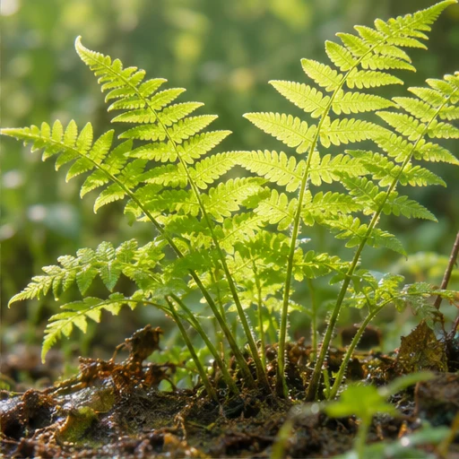
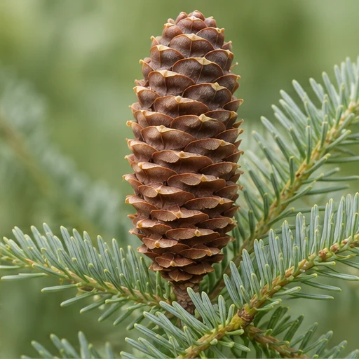

01Quels attributs vois-tu chez le haricot ?
Le haricot possède des feuilles, des racines et des graines contenues dans un fruit, la gousse.
MISSION 03 / 06 · CLASSIFICATION
Déterminer le groupe d’un végétal

DÉFI 1 / 5
La fougère
Cherche des fruits ou des cônes sur une fougère.

Le sapin
Observe les écailles du cône.
Les végétaux
Tu peux aussi choisir une photo, puis son groupe.
Cherche des graines, un cône ou un fruit.
Le caroubier
La caroube est un fruit.
La fougère
Ce groupe se reproduit par des spores.
BILAN DE LA MISSION
La fougère, un ptéridophyte, ne produit pas de graines. Le sapin, un gymnosperme, porte ses graines sur les écailles de ses cônes. Le caroubier, une angiosperme, porte ses graines dans un fruit, la caroube.
Le haricot possède des feuilles, des racines et des graines contenues dans un fruit, la gousse.
On les réunit en groupes emboîtés selon leurs attributs communs.
Elle sert à identifier le groupe d’un végétal grâce à ses attributs observables.
Les algues n’ont ni vraie tige ni vraies feuilles.
La mousse appartient aux bryophytes. Elle ne possède pas de vraies racines.
La fougère appartient aux ptéridophytes. Elle possède des racines et ne produit pas de graines.
Le sapin appartient aux gymnospermes. Ses graines sont portées par les écailles d’un cône.
Le caroubier appartient aux angiospermes. Ses graines se trouvent dans un fruit, la caroube.